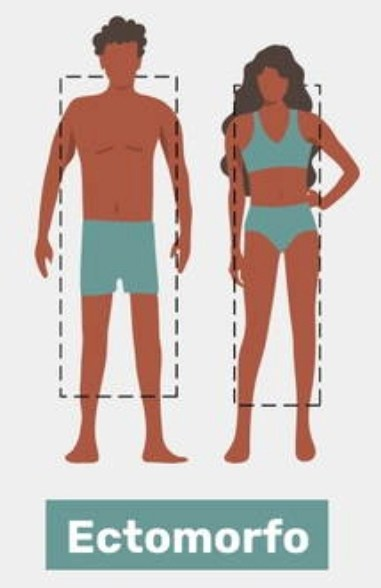
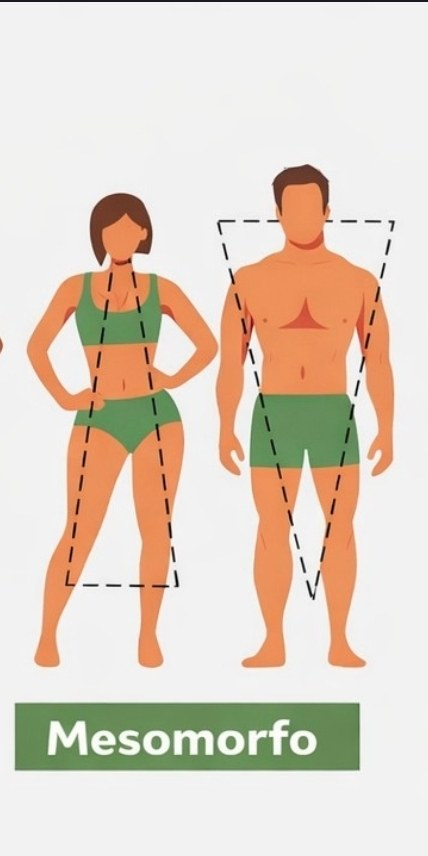
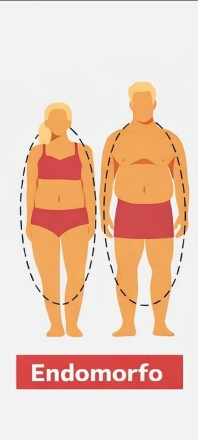

Responda para criarmos sua dieta personalizada conforme metabolismo, rotina e objetivo. Envio direto no WhatsApp do Personal.
Ajuda a calibrar agressividade do déficit/superávit e o nível de flexibilidade do plano.
Responda as 7 perguntas. Cada resposta soma pontos para Ectomorfo, Mesomorfo ou Endomorfo.
➤ Resultado do metabolismo (teste detalhado): —



Selecione os dias e informe o horário principal do treino (se variar, use “dias variáveis”).
Cardio extra altera o gasto e pode mudar carboidratos e estratégia de fome.
Toque nos alimentos que podem entrar na sua dieta. O que ficar verde e mostrar ✓ está selecionado.
Escreva o que comeu/beber nas últimas 24h, com quantidades aproximadas. Isso aumenta muito a precisão do ajuste inicial.
Gerado automaticamente conforme objetivo, metabolismo, peso, refeições/dia e alimentos ACEITOS.